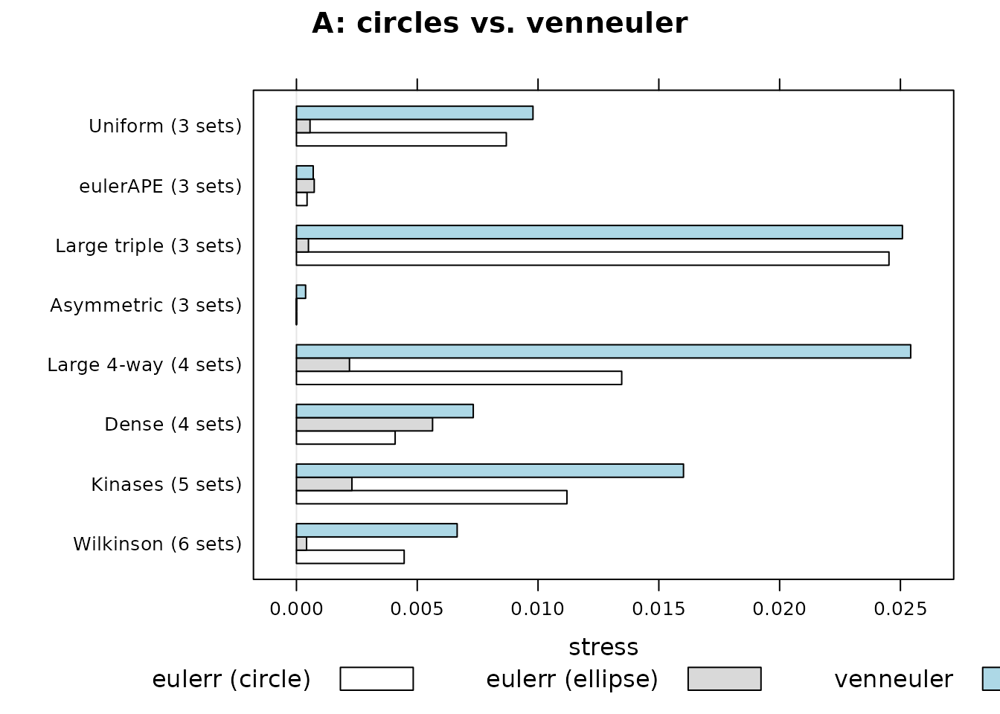
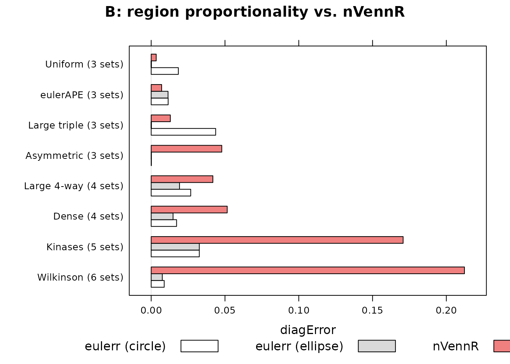
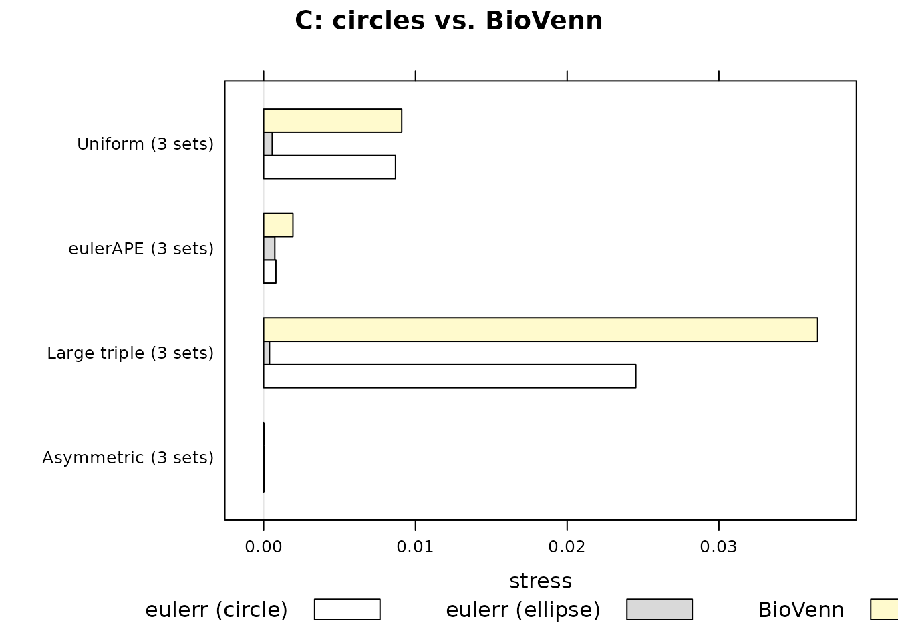
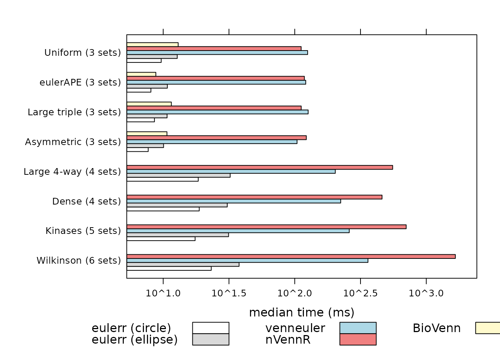

Comparison with other packages
Johan Larsson
2026-11-20
Source:vignettes/comparison.Rmd
comparison.RmdThis vignette compares eulerr with other R packages that fit area-proportional Euler and Venn diagrams. It compares their accuracy, speed, features, and scope.
What counts as a competitor
In an area-proportional diagram, each region’s area is proportional to the quantity it represents. Few R packages solve this geometric fitting problem. Most packages for Venn and Euler diagrams draw fixed, schematic shapes and encode quantities through labels or color instead of area.
On CRAN and Bioconductor, the packages that fit area-proportional diagrams are:
-
eulerr fits circles, ellipses, or axis-aligned
rectangles or squares through numerical optimization and reports
stressanddiagErrorgoodness-of-fit statistics. - venneuler fits only circles, using Wilkinson’s algorithm (Wilkinson 2012), and depends on Java through rJava.
- nVennR uses the nVenn algorithm (Pérez-Silva et al. 2018) to build quasi-proportional, n-dimensional diagrams from irregular polygons. It is distributed via GitHub.
- BioVenn generates accurate 2–3 circle diagrams from identifier lists (Hulsen 2021).
- vennplot fits 2D circles and 3D spheres for 2–3 sets (Xu et al. 2017). It is currently dormant on CRAN.
- VennDiagram is a drawing package whose scaled mode is area-proportional for two circles only (Chen and Boutros 2011).
The Excluded packages section lists packages that are not area-proportional fitters and explains why they are excluded.
How accuracy is measured
Fitters optimize different objectives, which makes fair comparisons difficult. A package that minimizes overall squared error will score poorly if judged by its single worst region, and vice versa. We therefore compare packages by objective: for each competitor, we configure eulerr to optimize the same objective and score both packages on the same metric.
To apply each metric consistently across packages, we compute fit
statistics from each package’s realized geometry rather than
use its self-reported diagnostics. We turn the fitted shapes into
polygons, compute the area of every disjoint region with
polyclip, and calculate eulerr’s statistics from those
areas:
- stress: the normalized residual sum of squares from venneuler, , with .
- diagError: the largest absolute difference between a region’s realized and target proportion, (from eulerAPE, (Micallef and Rodgers 2014)).
Here, is the input size of region , and is its realized area. Both statistics are scale-invariant, so packages that work in different coordinate systems remain comparable.
We use eight three- to six-set cases from the Python comparison corpus. The four three-set cases cover symmetric overlaps, an example from the eulerAPE article, a large triple intersection with small pairwise regions, and singleton regions that differ by two orders of magnitude. Both four-set cases populate all 15 regions, and one has a large four-way intersection. The five-set kinase data and Wilkinson’s six-set example add sparse overlaps among larger numbers of sets. The region sizes are copied unchanged from the Python corpus.
venneuler and nVennR run on all eight cases. BioVenn runs on the four three-set cases. Plot labels include the number of sets in parentheses.
The three comparisons are:
| Comparison | Competitor optimizes | eulerr setting | Scored on |
|---|---|---|---|
| A | overall fit (stress) |
loss = "stress", circles |
stress |
| B | region proportionality |
loss = "diag_error", circles |
diagError |
| C | overlap areas (3 circles) |
loss = "stress", circles |
stress |
Each comparison includes eulerr’s default ellipse
fit as a reference (eulerr (ellipse)). Ellipses have more
degrees of freedom than circles and typically fit better. For the direct
comparison with each competitor that fits circles, however, we use
eulerr’s circle mode.
Accuracy
Competitors benchmarked: venneuler, nVennR, BioVenn (generated 2026-11-11 10:52:59).

Fit error by dataset and package. Lower is better. Each competitor is matched against eulerr configured for the same objective.

Fit error by dataset and package. Lower is better. Each competitor is matched against eulerr configured for the same objective.

Fit error by dataset and package. Lower is better. Each competitor is matched against eulerr configured for the same objective.
Speed
Runtimes are median wall-clock times for repeated fits on the machine
that generated the results (see sessionInfo in the stored
meta). They indicate broad differences in speed, but
venneuler incurs a fixed JVM cost, and absolute times depend on the
hardware.

Median fit time (ms, log scale) by dataset and package.
Feature comparison
The packages also differ in scope and capabilities, as the table below shows.
| Package | Shapes | Max sets | Proportional | Input | Fit reported | Key dependency | Source |
|---|---|---|---|---|---|---|---|
| eulerr | circle, ellipse, rectangle, square | many | approximate | vectors, data frames, matrices, tables, lists | stress, diagError, regionError | none (Rust) | CRAN |
| venneuler | circle | many | approximate | named vector, data frame | stress | rJava / Java | CRAN |
| nVennR | irregular polygon | many | quasi | lists | none | C++ | GitHub |
| BioVenn | circle | 2–3 | accurate (2–3) | ID lists | none | none | CRAN |
| vennplot | circle (2D), sphere (3D) | 2–3 | approximate | counts, lists | none | Rcpp, rgl | CRAN (dormant) |
| VennDiagram | circle | 4 (2 scaled) | 2 sets only | counts | none | none | CRAN |
The main differences are:
- eulerr is the only package that fits ellipses (and rectangles or squares). Ellipses can exactly represent many three-set configurations that circles cannot. The results above show where this extra flexibility improves the fit.
- eulerr and venneuler are the only packages that report a numeric measure of goodness of fit. Without such a measure, readers cannot tell how much a diagram distorts the data. Area-proportional diagrams with three or more sets almost always distort the data to some degree.
- eulerr has no system dependencies beyond a Rust toolchain at build time, whereas venneuler requires a working Java installation through rJava, which is a common source of installation trouble.
- nVennR achieves closer proportionality only by replacing smooth shapes with irregular polygons. The central trade-off is between smooth, interpretable shapes (eulerr and venneuler) and exact topology with jagged regions (nVennR).
Excluded packages
Many widely cited packages for Venn and Euler diagrams are not area-proportional fitters and therefore fall outside the scope of this comparison.
| Package | Reason |
|---|---|
| venn, ggVennDiagram, ggvenn, RVenn, gplots | Draw fixed, schematic shapes; quantity shown via labels or color, not area |
| UpSetR | Not a Venn/Euler diagram at all (UpSet matrix/bar charts) |
| colorfulVennPlot | Archived from CRAN; only a 2-set helper, never a general fitter |
| VennMaster | Area-proportional, but a standalone Java application and not an R package |
| Vennerable | Area-weighted, but hosted on R-Forge/GitHub, not CRAN or Bioconductor |
Caveats
“Area-proportional” is a spectrum. For three or more sets, exact solutions with circles or ellipses are often geometrically impossible, so eulerr and venneuler produce approximate diagrams. nVennR achieves closer proportionality only by replacing smooth shapes with irregular polygons. Comparisons should report fit error, as the accuracy section above does, rather than merely whether a package produced a diagram.
The BioVenn documentation claims it is “the only R package that can automatically generate an accurate area-proportional Venn diagram,” but eulerr, venneuler, and vennplot also produce accurate area-proportional circle diagrams.
The numbers here come from one machine and one set of package
versions. To regenerate them, enter the development environment with
devenv shell and run
Rscript data-raw/benchmarks.R from the package root.